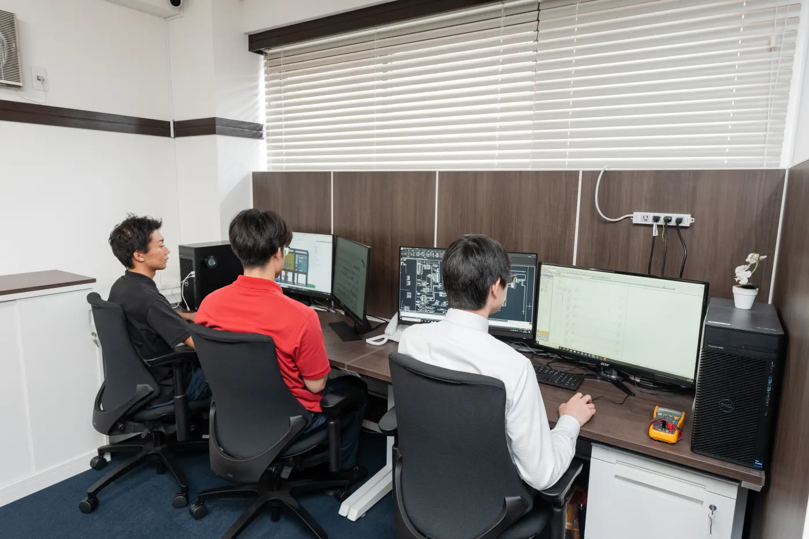
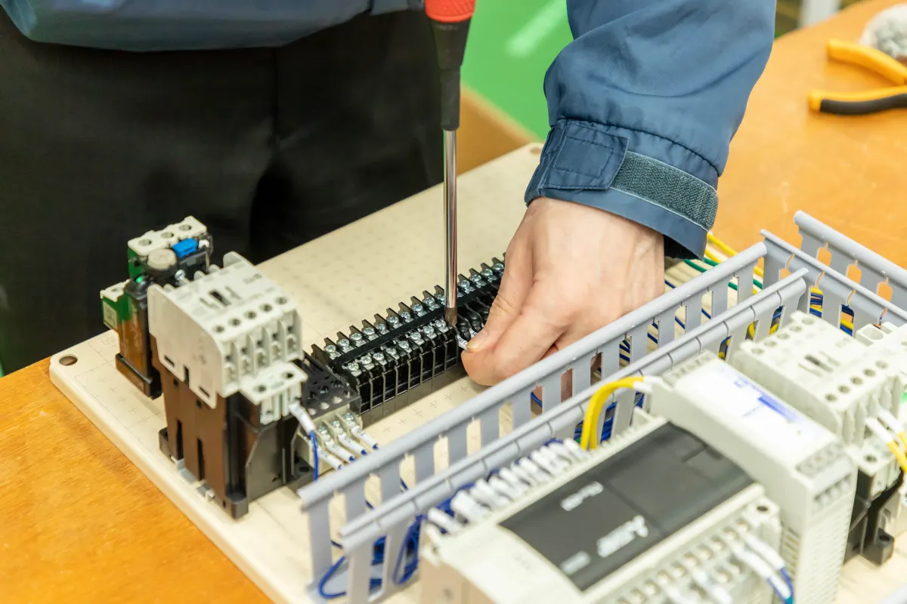
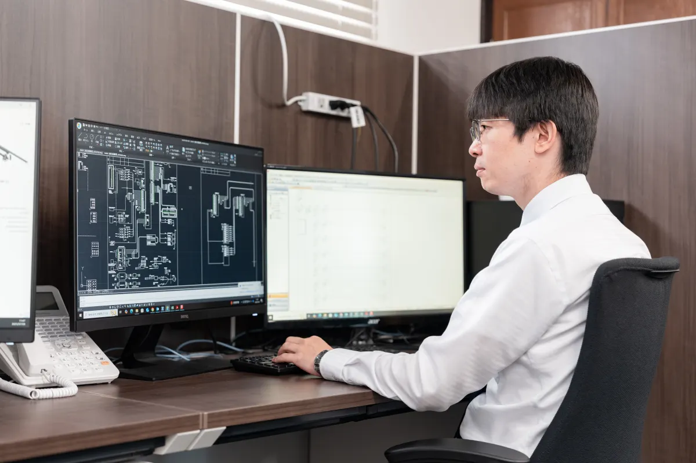

空き時間を活かせる
就業時間外や休日を活用し、副業・業務委託として無理のない範囲で参画できます。
エンジニアメリットEngineer
本業を持つエンジニアや定年退職した技術者が、空き時間と専門性を活かして研究開発に参加できる仕組みです。
投資企業から寄せられた現場課題を起点に、プロジェクトごとにチームを編成します。自社の枠を越えた技術交流を通じて、スキルを磨きながら新しい製品・技術の創出に関われます。

参加メリットMerit
就業時間外や休日を活用し、副業・業務委託として無理のない範囲で参画できます。
異業種のエンジニアや外部専門家、産学連携チームと協働し、新しい視点を得られます。
開発期間中の基本報酬に加え、事業化後は貢献度に応じた成果連動型の還元を想定しています。
働き方Work Style
所属企業の副業規定を確認したうえで、平日夜間や休日を中心にプロジェクトへ参加できます。
長年培った専門知識や現場経験を、次世代の研究開発や若手エンジニアとの協働に活かせます。
案件ごとに必要な技術を持ち寄るため、専門性を発揮しながら隣接分野への理解も深められます。
R&Dコンソーシアムの強みStrength
スキルアップしながら報酬確保
就業時間外や休日を活用
開発者の副業支援制度
起案者、技術者へ利益の還元
アイデアにも技術者にも報酬
知恵が資本化され、技術者の意欲向上

